LINE Bot Course
Original slides and hands-on reading
Yu-Ting Shih (Andrew Shih) · Source-aligned course notes
LINE Bot Course
Yu-Ting Shih (Andrew Shih) · Source-aligned course notes
Follow the original GAS → LINE reply → Sheets logging → Gemini → system instruction exercises. Slide images and code excerpts remain linked to their PDF page numbers. Extracts are learning material, not a complete tested application; corrections are listed separately.
Page numbers below are PDF page numbers, not slide numbers. The 38-page file contains two slides per page.
38-page PDF: 2–3 · 112-page PDF: 3–5, 35–36
Separate the incoming LINE event, GAS request handling, API call and reply. Use the original architecture to explain where information is received, processed and stored.
Check: explain the webhook URL and the different responsibilities of doPost(e) and reply_message().
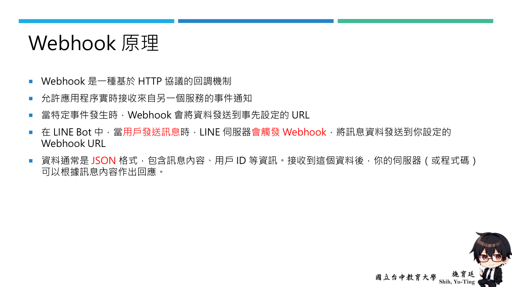
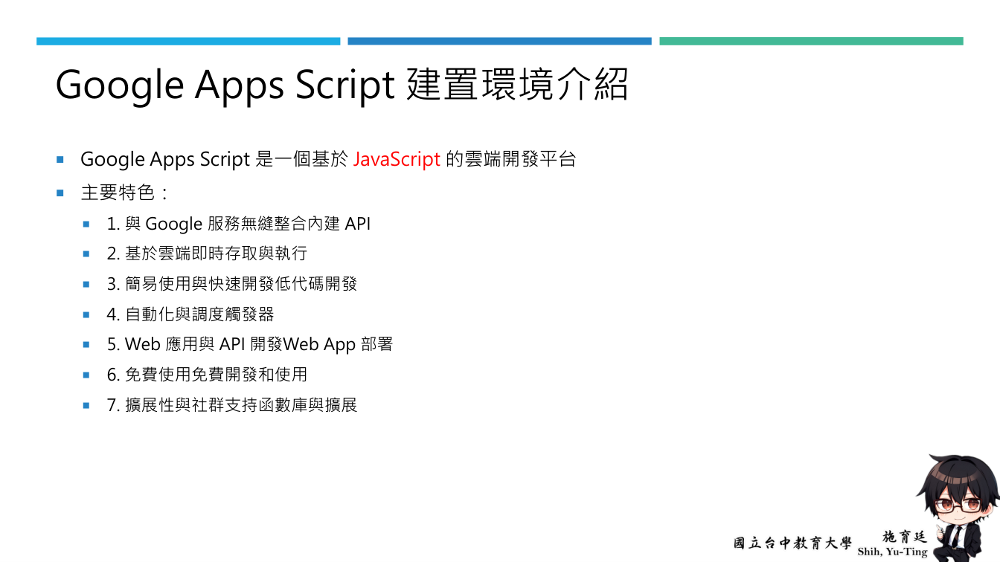
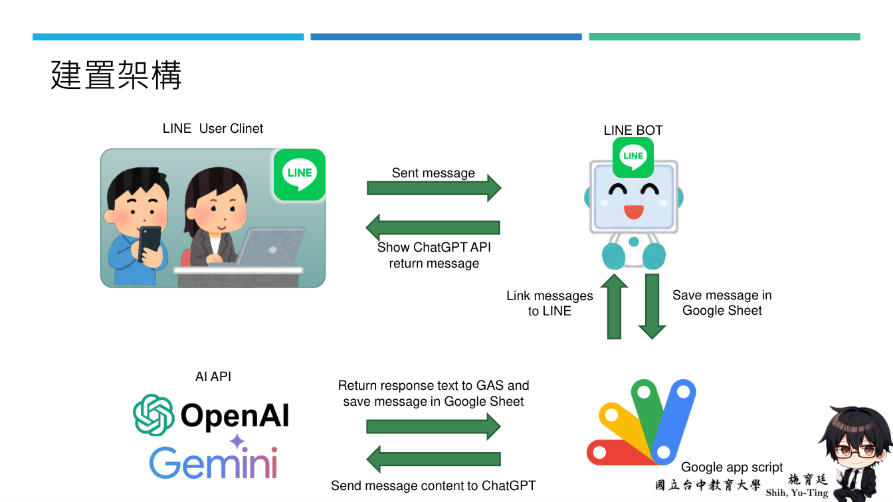
38-page PDF: 26–30（相關內容） · 112-page PDF: 6–33
The 112-page deck introduces Gemini and AI Studio before Sheets functions geminiAsk1(question) and gemini_api(), followed by a Docs menu and submitData(). This is an additional prerequisite exercise in the longer deck; the two decks do not have identical sequences.
Check: distinguish a Sheets custom function, a Docs menu action and a LINE webhook.
初始程式撰寫
var Gemini_ACCESS_TOKEN ='' //Gemini API Key
function geminiAsk1(question){
var response = gemini_api(question);
var send_msg = response;
return _parse_response(send_msg);
}內部程式
// 設定生成配置的參數，包括溫度（temperature）
//top_p、top_k
//最大輸出字數（max_output_tokens）
//回應的MIME 類型（response_mime_type）
const generation_config = {
"temperature": 1, // 溫度值決定回應的隨機性，值越高，回應越多樣化
"top_p": 0.95, // 使用top-p 取樣來決定回應的多樣性
"top_k": 64, // 使用top-k 取樣來限制可能的回應選項數量
"max_output_tokens": 350, // 設定回應的最大token數
"response_mime_type": "text/plain", // 回應的MIME 類型
};內部程式
var apiUrl = `https://generativelanguage.googleapis.com/v1beta/models/gemini-1.5-flash-latest:generateContent?key=${Gemini_ACCESS_TOKEN}`
// 建立請求的主體內容，將使用者輸入的訊息（send_msg）包裝成JSON 格式
var requestBody = JSON.stringify({
"contents": [
{
"parts": [
{
"text": `
`
},
{
"text": message // 使用者輸入的訊息
}
]
}
],
"generationConfig": generation_config // 設定生成配置
});內部程式
// 設定API 呼叫的選項，包括HTTP 方法（POST）、內容類型（application/json）、以及請求的主體內容
var options = {
"method": "post", // 使用POST 方法
"contentType": "application/json", // 設定內容類型為JSON
"payload": requestBody // 請求的主體內容
};
try {
// 使用UrlFetchApp 來呼叫API，並取得回應
var response = UrlFetchApp.fetch(apiUrl, options);
// 解析回應的JSON 內容
var data = JSON.parse(response.getContentText());
// 輸出並返回回應的文本內容
console.log(data.candidates[0].content.parts[0].text)
return data.candidates[0].content.parts[0].text;
} catch (error) {
// 處理API 呼叫時的錯誤，並回傳錯誤訊息
console.error('Error calling Gemini API:', error.toString());
return "抱歉，我無法處理您的請求。"; // 回應錯誤訊息
}38-page PDF: 4–15 · 112-page PDF: 34, 37–58
Follow account creation, account details, response settings, enabling Messaging API and locating the channel in the developer console. Avatar design is an interface exercise, not a prerequisite for replies.
Check: distinguish the webhook switch from automatic replies and confirm the channel belongs to the intended account.
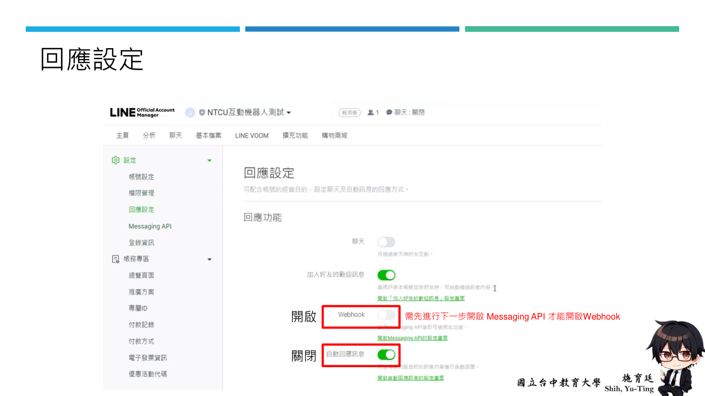
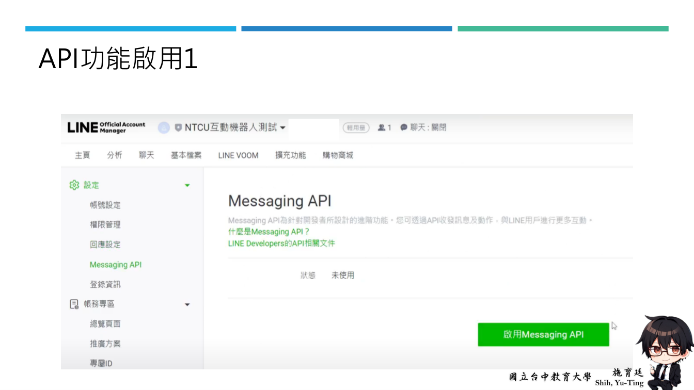
38-page PDF: 15–23 · 112-page PDF: 59–75
Create the Apps Script project and study doPost(e), get_user_info(), sendLoading() and reply_message(). Identify text and group events, then follow deployment, authorization, webhook configuration and reply checks. This preserves the GAS learning path without introducing Node or Cloud Run prerequisites.
Check: trace event.message.text to reply content and reply_message(). The historical example is not evidence of production security.
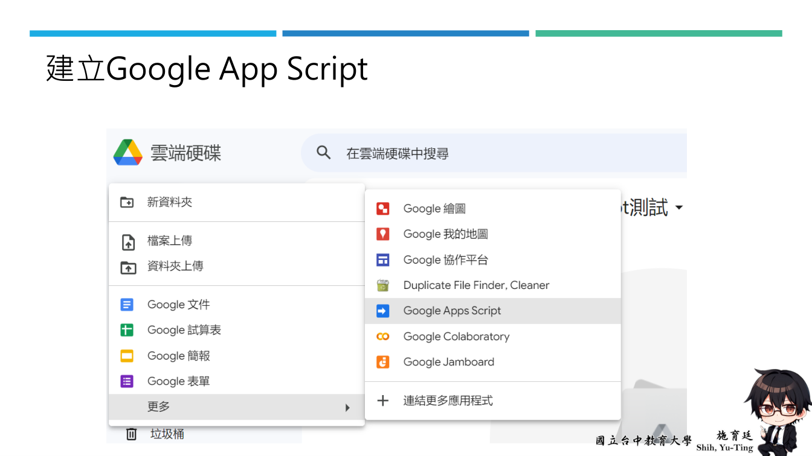
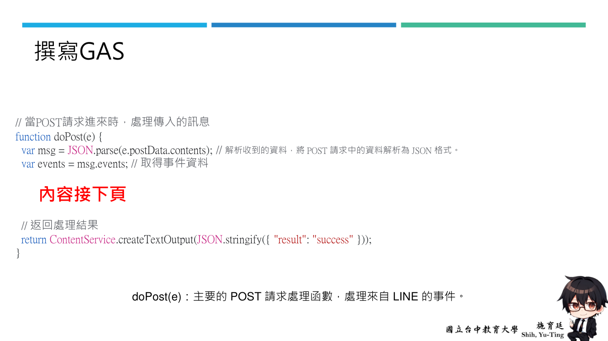
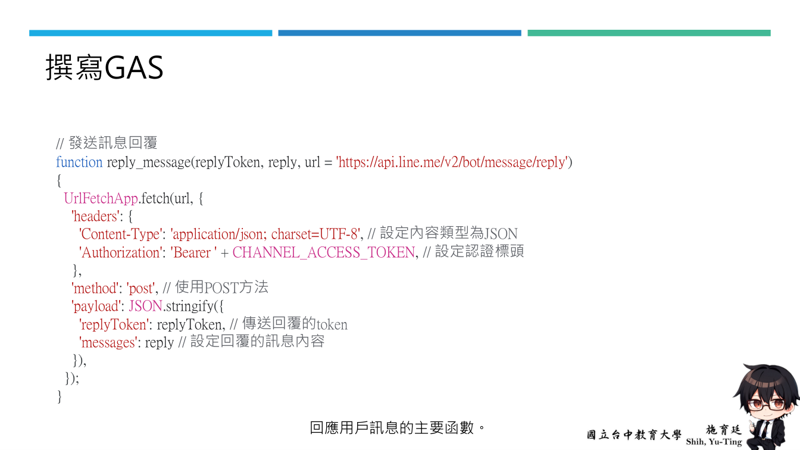
撰寫GAS // 定義LINE的CHANNEL_ACCESS_TOKEN，用來驗證機器人 var CHANNEL_ACCESS_TOKEN = “填入自己LINE的CHANNEL_ACCESS_TOKEN"; CHANNEL_ACCESS_TOKEN：用於驗證與LINE API 的通訊，定義機器人身份。 需要向LINE Developer 申請取得，作為認證用。
撰寫GAS
// 當POST請求進來時，處理傳入的訊息
function doPost(e) {
var msg = JSON.parse(e.postData.contents); // 解析收到的資料，將POST 請求中的資料解析為JSON 格式。
var events = msg.events; // 取得事件資料
內容接下頁
// 返回處理結果
return ContentService.createTextOutput(JSON.stringify({ "result": "success" }));
}
doPost(e)：主要的POST 請求處理函數，處理來自LINE 的事件。撰寫GAS
// 如果有事件發生
if (events.length > 0) {
var event = events[0]; // 只處理第一個事件
var replyToken = msg.events[0].replyToken; // 取得回覆的token每次用戶訊息事件都會附帶一個回覆用的token，僅能使用一次。
var userId = event.source.userId; // 取得用戶ID
var groupId = event.source.groupId || ""; // 取得群組ID（如果有）
var user_info = get_user_info(userId, groupId); // 取得用戶資訊
var displayName = user_info.displayName; // 取得用戶顯示名稱
var language = user_info.language; // 取得用戶語言
// 開始顯示讀取動畫，持續5秒
sendLoading(userId, 5);
// 檢查事件類型是否為訊息
if (event.type === 'message')
{
var messageType = event.message.type; // 取得訊息類型
if (messageType === 'text') //檢查訊息類型是否為文字。
{ // 如果訊息是文字
var userMessage = "你說了：" + event.message.text; //組合回覆訊息的內容
if( groupId != "") // 如果訊息來自群組
{
if(userMessage.startsWith("!")) // 如果訊息以"!"開頭
{
reply_message(replyToken, [{ 'type': 'text', 'text': userMessage }]) // 回覆訊息
}
else // 可以在這裡處理其他群組訊息的邏輯
{
}
}
else // 如果訊息不是來自群組，直接回覆訊息
{
reply_message(replyToken, [{ 'type': 'text', 'text': userMessage }])
}
}
}
}撰寫GAS
// 取得用戶資訊
function get_user_info(userId, groupId) // 決定是查詢群組成員還是單一用戶的API
{
var url = groupId ? 'https://api.line.me/v2/bot/group/' + groupId + '/member/' + userId : 'https://api.line.me/v2/bot/profile/' + userId;
var headers = {
"Authorization": "Bearer " + CHANNEL_ACCESS_TOKEN // 設定認證標頭
};
var options = {
"method": "get", // 使用GET方法
"headers": headers,
"muteHttpExceptions": true // 靜音HTTP例外狀況（忽略錯誤）
};
var response = UrlFetchApp.fetch(url, options); //用來發送HTTP 請求並取得回應
if (response.getResponseCode() == 200) // 如果請求成功
{
var user_info = JSON.parse(response.getContentText()); // 解析用戶資訊
return user_info; // 返回用戶資訊
}
else
{
return { "displayName": "Unknown", "language": "Unknown" }; // 如果失敗，返回預設值
}
}
get_user_info(userId, groupId)：用於取得用戶或群組成員的基本資訊。撰寫GAS
// 發送讀取動畫
function sendLoading(userId, seconds)
{
var url = 'https://api.line.me/v2/bot/chat/loading/start'; // 發送讀取動畫的API
var payload = {
"chatId": userId, // 設定聊天對象ID
"loadingSeconds": seconds // 設定讀取動畫的持續時間
};
var options = {
'method': 'post', // 使用POST方法
'contentType': 'application/json', // 設定內容類型為JSON
'headers': {
'Authorization': 'Bearer ' + CHANNEL_ACCESS_TOKEN, // 設定認證標頭
},
'payload': JSON.stringify(payload) // 將資料轉換為JSON格式
};
UrlFetchApp.fetch(url, options); // 發送請求
}
在回應訊息前，顯示讀取動畫。撰寫GAS
// 發送訊息回覆
function reply_message(replyToken, reply, url = 'https://api.line.me/v2/bot/message/reply')
{
UrlFetchApp.fetch(url, {
'headers': {
'Content-Type': 'application/json; charset=UTF-8', // 設定內容類型為JSON
'Authorization': 'Bearer ' + CHANNEL_ACCESS_TOKEN, // 設定認證標頭
},
'method': 'post', // 使用POST方法
'payload': JSON.stringify({
'replyToken': replyToken, // 傳送回覆的token
'messages': reply // 設定回覆的訊息內容
}),
});
}
回應用戶訊息的主要函數。38-page PDF: 23–25 · 112-page PDF: 76–80
Follow timestamp creation, opening the spreadsheet, selecting a tab and appendRow after the reply. Start with synthetic test messages and verify column order and tab names. Do not use real learner conversations as practice data.
Check: the source records time, user ID, group ID, display name, message and language; the AI stage adds reply. Reassess necessity, notice and retention before real use.
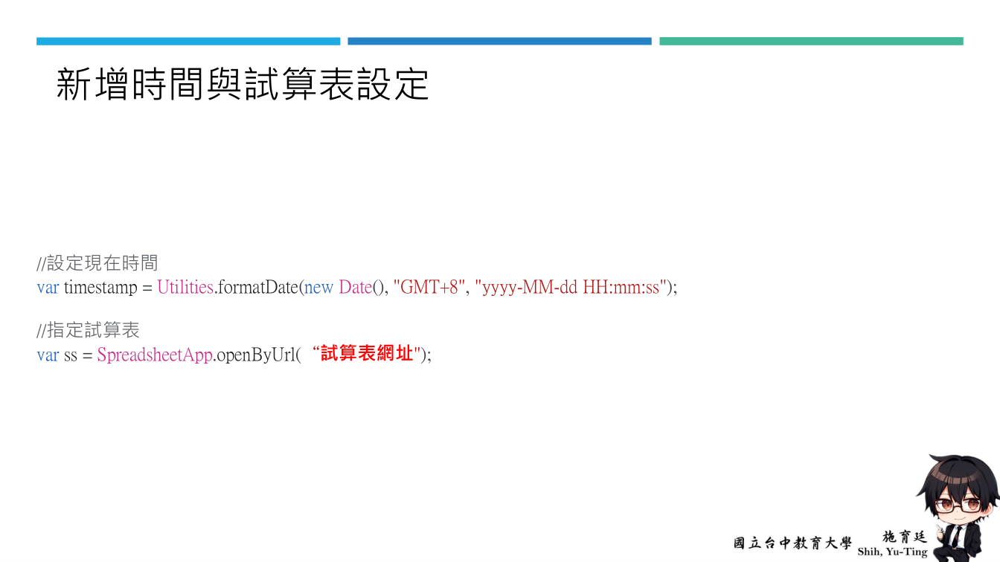
新增時間與試算表設定 //設定現在時間 var timestamp = Utilities.formatDate(new Date(), "GMT+8", "yyyy-MM-dd HH:mm:ss"); //指定試算表 var ss = SpreadsheetApp.openByUrl(“試算表網址");
在reply_message後新增紀錄訊息
reply_message(replyToken, [{ 'type': 'text', 'text': userMessage }]) // 回覆訊息
sheet = ss.getSheetByName(“工作表1”); //指定工作表
//在工作表新增最後一筆資料，時間、使用者ID、群組ID、使用者暱稱、使用者訊息、使用者語言
sheet.appendRow([timestamp, userId, groupId, displayName, userMessage, language]);38-page PDF: 26–34 · 112-page PDF: 81–98
Study the API input, generationConfig, requestBody and response parsing. Pass userMessage to gemini_api(send_msg), then pass the returned text to reply_message(). The two else blocks on page 97 are before/after alternatives, not blocks to paste together.
Check: explain the changed data flow. The source model name gemini-1.5-flash-latest is historical, not a guarantee of current availability.
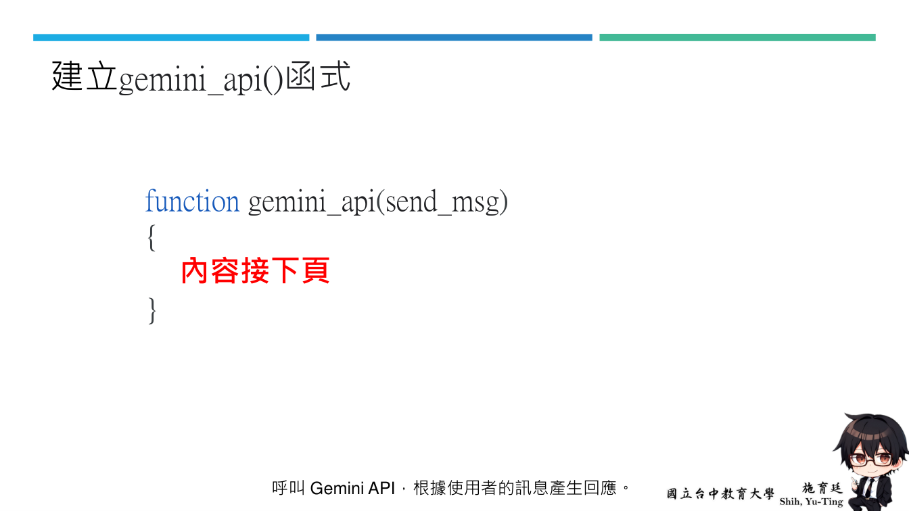
在主程式(程式碼.gs)新增API Key 以及新增指令碼gemini_api .gs // 定義LINE的CHANNEL_ACCESS_TOKEN，用來驗證機器人 var CHANNEL_ACCESS_TOKEN = “填入自己LINE的CHANNEL_ACCESS_TOKEN"; var Gemini_ACCESS_TOKEN =‘填入自己gemini API Key’; 後續API設定
gemini_api()函式內容1
// 設定生成配置的參數，包括溫度（temperature）、top_p、top_k
//最大輸出字數（max_output_tokens）、回應的MIME 類型（response_mime_type）
const generation_config = {
"temperature": 1, // 溫度值決定回應的隨機性，值越高，回應越多樣化
"top_p": 0.95, // 使用top-p 取樣來決定回應的多樣性
"top_k": 64, // 使用top-k 取樣來限制可能的回應選項數量
"max_output_tokens": 300, // 設定回應的最大token數
"response_mime_type": "text/plain", // 回應的MIME 類型
};
// 定義API URL，其中包含API 金鑰（Gemini_ACCESS_TOKEN）
var apiUrl =`https://generativelanguage.googleapis.com/v1beta/models/gemini-1.5-flash-latest:generateContent?key=${Gemini_ACCESS_TOKEN}`gemini_api()函式內容2
// 建立請求的主體內容，將使用者輸入的訊息（send_msg）包裝成JSON 格式
var requestBody = JSON.stringify({
"contents": [
{
"parts": [
{
"text": `
`
},
{
"text": send_msg // 使用者輸入的訊息
}
]
}
],
"generationConfig": generation_config // 設定生成配置
});
// 設定API 呼叫的選項，包括HTTP 方法（POST）、內容類型（application/json）、以及請求的主體內容
var options = {
"method": "post", // 使用POST 方法
"contentType": "application/json", // 設定內容類型為JSON
"payload": requestBody // 請求的主體內容
};gemini_api()函式內容3
try
{
// 使用UrlFetchApp 來呼叫API，並取得回應
var response = UrlFetchApp.fetch(apiUrl, options);
// 解析回應的JSON 內容
var data = JSON.parse(response.getContentText());
// 輸出並返回回應的文本內容
console.log(data.candidates[0].content.parts[0].text)
return data.candidates[0].content.parts[0].text;
}
catch (error)
{
// 處理API 呼叫時的錯誤，並回傳錯誤訊息
console.error('Error calling Gemini API:', error.toString());
return "抱歉，我無法處理您的請求。"; // 回應錯誤訊息
}修改程式碼.gs，將使用者訊息傳入gemini_api()
else // 如果訊息不是來自群組，直接回覆訊息
{
reply_message(replyToken, [{ 'type': 'text', 'text': userMessage }])
sheet = ss.getSheetByName("工作表1");
sheet.appendRow([timestamp, userId, groupId, displayName, userMessage, language]);
}
else // 如果訊息不是來自群組，直接回覆訊息
{
send_msg = userMessage + "###";
content = gemini_api(send_msg); // 等待API 回應
// 直接組合訊息並過濾不需要的字元
reply = content.replace("###", "");
reply_message(replyToken, [{ 'type': 'text', 'text': reply }])
sheet = ss.getSheetByName("工作表1");
sheet.appendRow([timestamp, userId, groupId, displayName, userMessage, language,reply]);
}38-page PDF: 35–38 · 112-page PDF: 99–112
Define role, tone, task scope and behavioral constraints as in the deck. Compare responses on a fixed set of questions before and after changes, then choose an educational, support or knowledge task. A plausible response alone is not a completed test.
Check: record test prompts, expected behavior, actual answers and revisions; distinguish operational success from factual correctness.
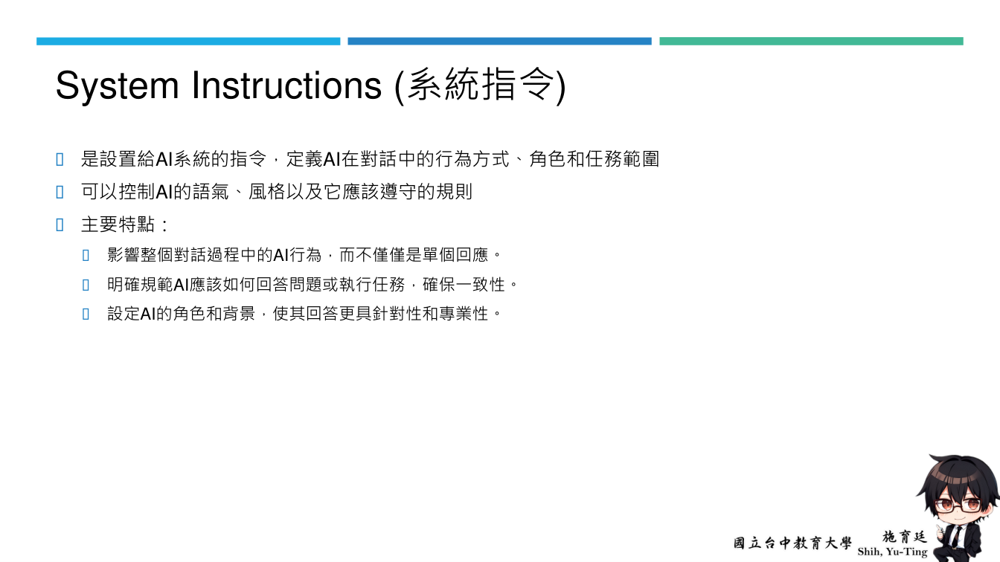
The architecture page continues with Sheets → Drive → Apps Script → API settings → Drive API → Web app deployment → LINE webhook, followed by rich menus and file Q&A, report generation, Threads, search, calendar, email and notes. These are extensions to the basic slide exercises, not a replacement cloud-server course.